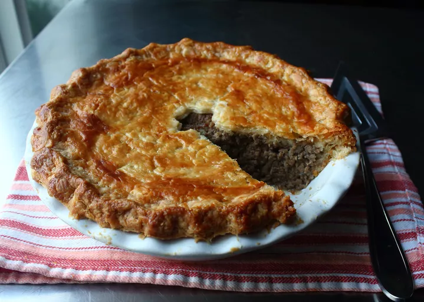

Tourtiere. Pastel de Carne

Descripcion
La tourtière es un pastel de carne francocanadiense abundante
y satisfactorio que es fácil de preparar, por lo que es una excelente
opción como plato principal para las fiestas. Es visualmente impresionante,
relativamente asequible y se sirve mejor a temperatura ambiente;
no requiere un tiempo preciso.
Ingredientes
- Corteza
- Mezcla de especias
- Relleno
- Lavado de huevos
Pasos
- Reuna todos los ingredientes
-
Para hacer la masa: coloque la harina, la mantequilla congelada y la sal
en el bol de un procesador de alimentos. Pulse de forma intermitente hasta
que la mantequilla se deshaga hasta el tamaño de un guisante, aproximadamente
30 segundos. Mezcle el agua fria y el vinagre; rocie sobre la mezcla de harina.
Pulse de forma intermitente hasta que la mezcla se desmorone y se mantenga unida
al apretarla, aproximadamente 10 segundos. Rocíe con más agua fría si la
mezcla está demasiado seca.
-
Transfiera la mezcla a una superficie de trabajo. Presione hasta formar una bola.
Aplaste hasta formar un disco, envuélvala en film transparente y refrigérela
hasta que se enfríe, aproximadamente 1 hora.
-
Para preparar la mezcla de especias: mezcle la sal, la pimienta negra, el tomillo,
la salvia, la canela, el jengibre, la nuez moscada, la pimienta de Jamaica, la
mostaza, el clavo y la cayena en un tazón pequeño; reserve.
- Para preparar el relleno: coloque las papas y 1 cucharadita de sal kosher en una
cacerola; cubra con agua fría. Lleve a ebullición, reduzca el fuego y cocine a
fuego lento hasta que estén tiernas, de 10 a 15 minutos. Use una espumadera
para transferir las papas a un tazón, reservando el agua de cocción de las papas
en la cacerola. Triture las papas con un machacador de papas hasta que quede
una mezcla homogénea; reserve.
-
Derretir la mantequilla en una sartén a fuego medio. Agregar la cebolla picada y
una pizca de sal. Cocinar y revolver hasta que las cebollas se doren, de 10 a 15
minutos. Incorporar el apio, el ajo y la mezcla de especias a la sartén con las
cebollas. Revolver hasta que la mezcla de cebollas esté cubierta uniformemente
con especias, aproximadamente 30 segundos.
-
Añade carne de cerdo molida, carne de res molida y aproximadamente 3/4 de
taza de agua de cocción de las papas a la sartén. Cocina, revolviendo de vez en
cuando, hasta que la carne esté dorada y tierna y la mayor parte del líquido se
haya evaporado, aproximadamente 45 minutos. Incorpora el puré de papas,
apaga el fuego y deja enfriar a temperatura ambiente. Precalienta el horno
a 375 grados F (190 grados C).
-
Divida la masa fría en dos porciones, una apenas más grande que la otra.
Extienda la porción más grande sobre una superficie de trabajo ligeramente
enharinada hasta formar un círculo de 30 cm (12 pulgadas). Colóquela en un
molde para tarta hondo de 23 cm (9 pulgadas). Extienda la masa superior hasta
formar un círculo de 28 cm (11 pulgadas); reserve.
- Rellene la base de la tarta con la mezcla de carne; alise la superficie.
Bata el huevo y el agua en un bol pequeño para hacer un baño de huevo.
Pinte con huevo batido los bordes de la base de la tarta. Cubra con la base
de la tarta; presione ligeramente alrededor de los bordes para sellar.
Recorte el exceso de masa y doble los bordes. Haga pequeñas hendiduras
en la base de la tarta para permitir que escape el vapor. Pinte toda la
superficie de la tarta con huevo batido.
-
Hornee en el horno precalentado hasta que la masa esté bien dorada,
aproximadamente 1 hora. Deje enfriar hasta casi temperatura ambiente
antes de servir.